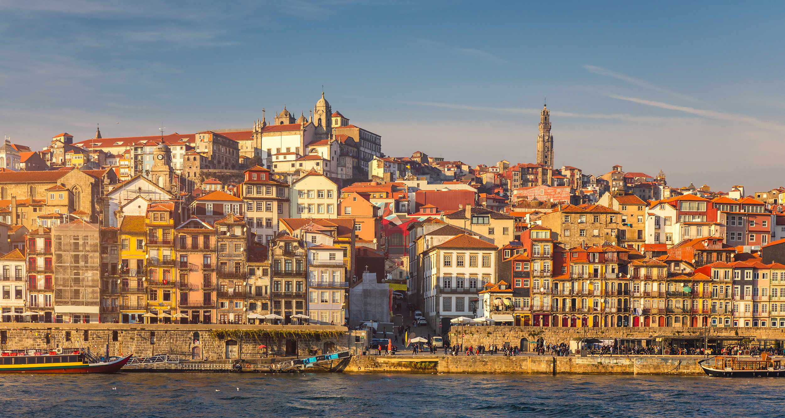
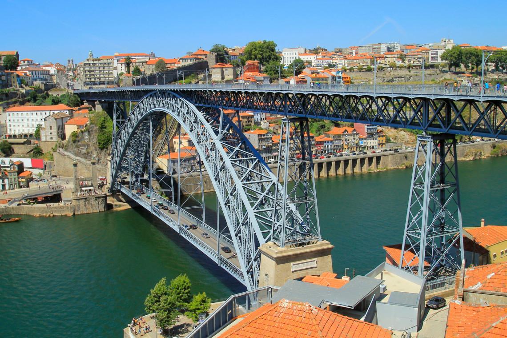

Ribeira & River Cruises
Stroll along the colorful UNESCO waterfront of Ribeira, cross iconic bridges, and sail down the scenic Douro River.

UNESCO World HeritageRibeira Waterfront District
Porto's most picturesque neighborhood, filled with pastel-colored historic houses, narrow cobblestone alleys, street performers, and riverside cafes.
- Cais da Ribeira, Porto
- Free to explore

Must CrossDom Luís I Bridge
Iconic double-deck metal arch bridge designed by a student of Gustave Eiffel, offering amazing river views from both the upper metro deck and lower road deck.
- Ponte Dom Luís I, Porto / Gaia
- Free Access
 Classic Boat Tour
Classic Boat Tour
6 Bridges River Cruise
Hop on a traditional wooden Rabelo wine boat for a 50-minute scenic cruise navigating past all six historic bridges connecting Porto and Gaia.
- Departure from Cais da Ribeira or Gaia
- ~€18 per ticket (Student discounts)
Erasmus Local Tip
For the best sunset in Porto, walk along the upper deck of Dom Luís I Bridge towards Jardim do Morro on the Gaia side. Grab a cheap drink, sit on the grass with friends, and enjoy street musicians performing as the sun sets over the river!